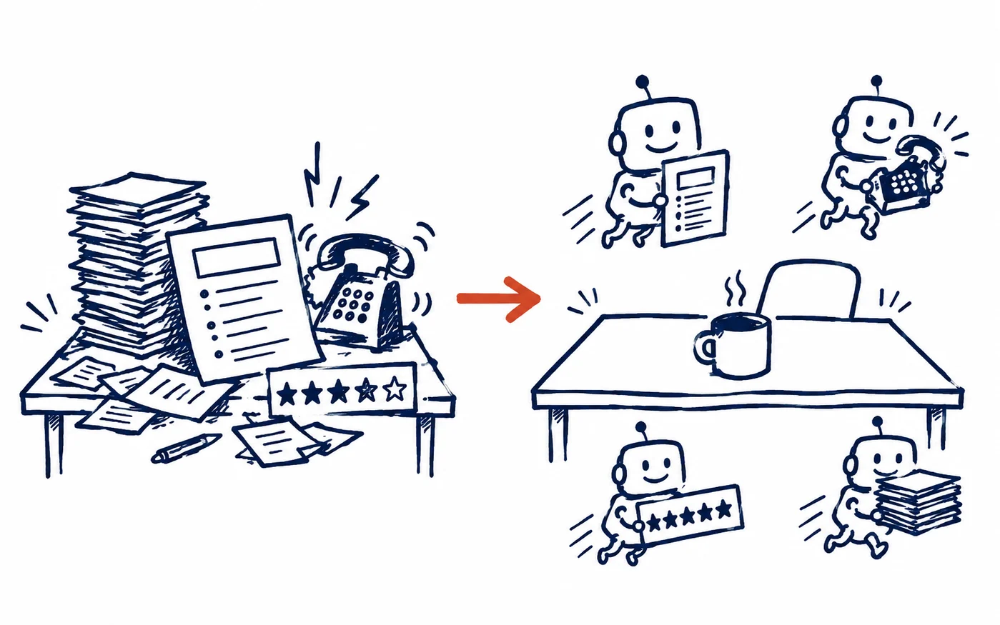

04 · Visual inventory
See the pieces together.
A light gallery of the retained doodles, event images, and three simple explanation drafts. Use each caption to judge whether the visual earns its place beside the copy.

04 · Visual inventory
A light gallery of the retained doodles, event images, and three simple explanation drafts. Use each caption to judge whether the visual earns its place beside the copy.
